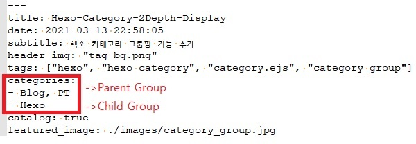
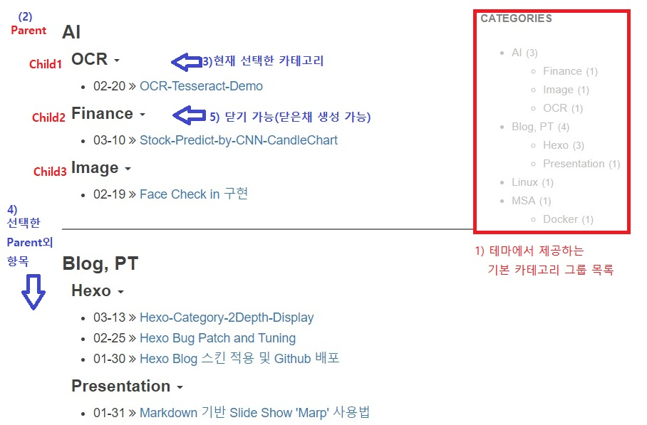

개요
- 내가 사용한 Hexo 테마(BeanTech)에는 카테고리 기능이 없었다.
- 이전 포스팅한 기능패치 포스트(https://jukyellow.github.io/2021/02/25/bug-patch-tuning/)에서 참고 페이지에서 힌트를 찾았고
- 그냥 날코딩(감으로) 삽질끝에 원하는 형태 구현 성공!
Post 카테고리 작성법
- 아래와 같이 Post작성시 헤더에 Parent/Child 그룹으로 구성가능
- Child가 없을때 Parent로만 구성됨

카테고리 페이지 화면설명
- (2) 상단에는 선택한 Parent 노드 출력
- (3) Child 노드중에서도 선택한 항목을 최상단에 출력
- (4) 선택하지 않은 Parent는 하위에 차례로 출력
- (5) 세모박스 클릭시 노드 닫아두기 가능(닫아둔채로 생성도 가능)

구현 가이드?
ejs 문법(생략)
- Embedded JavaScript templates : 자바스트립트를 할 줄 알면 대충 읽을수 있음
선택된 카테고리 정보
1 | <% page.posts.each(post=>{ %> |
전체 카테고리 순회
1 | <% site.categories.each(function(p_item){ |
Parent가 존재하는 Child
1 | < if(c_item.parent!=undefined && p_item._id == c_item.parent){ > |
현재 선택한 Child 전체 출력
- 현재 선택한 카테고리(child) ID와 순회중인 child_id 비교(c_item._id == p_category.data[1]._id)
- 전체 포스트를 순회(<% site.posts.sort(‘date’, -1).forEach(function(it){ %>)하며 선택한 카테고리 id에 속하는 포스트 출력
1
2
3
4
5
6
7
8
9
10
11
12
13
14
15
16
17
18
19
20<% site.posts.sort('date', -1).forEach(function(it){ %>
<% if (it.categories.length == 2 && it.categories.data[1]._id == c_item._id && c_item._id == p_category.data[1]._id){ %>
<% if (head_2d_cnt==0) { %>
<h4 style="margin:10px 0 10px;" class="archive-ul show" data-toggle="collapse" id="<%= c_item.name %>" data-target="#modal-<%= c_item.name %>"> <%= c_item.name %> <b class="caret"></b></h4>
<ul style="margin-bottom: 10px;" id="modal-<%= c_item.name %>" class="collapse in">
<% site.posts.sort('date', -1).forEach(function(it){ %>
<% if (it.categories.length == 2 && it.categories.data[1]._id == c_item._id && it.categories.data[1]._id == p_category.data[1]._id){ %>
<li class="listing-item">
<%= it.date.format('MM-DD') %>
<i class="fa fa-angle-double-right" aria-hidden="true"></i>
<a href="<%= config.root %><%= it.path %>" <% if (it.description) { %> title="<%= it.description %>" <% } %>><%= it.title %></a>
</li>
<% } %>
<% }); %>
</ul>
<% ++head_2d_cnt; %>
<% } %>
<% return false; //break %>
<% } %>
<% }); %>child 닫은채 출력
- 현재 child가 열린채 출력
리스트의 하위 목록으로 id를 지정(data-target=”#modal-<%= c_item.name %>)
1
2<h4 style="margin:10px 0 10px;" class="archive-ul show" data-toggle="collapse" id="<%= c_item.name %>" data-target="#modal-<%= c_item.name %>"> <%= c_item.name %> <b class="caret"></b></h4>
<ul style="margin-bottom: 10px;" id="modal-<%= c_item.name %>" class="collapse in"> - child를 닫은채로 출력
하위 tag에서 class값을 “collapse”로 설정
1
2<h4 style="margin:10px 0 10px;" class="archive-ul show" data-toggle="collapse" id="<%= c_item.name %>" data-target="#modal-<%= c_item.name %>"> <%= c_item.name %> <b class="caret"></b></h4>
<ul style="margin-bottom: 10px;" id="modal-<%= c_item.name %>" class="collapse">Source
- 적용버전: https://github.com/jukyellow/hexo-blog/blob/main/themes/beantech/layout/category.ejs
- 주석버전: https://github.com/jukyellow/hexo-blog/blob/main/themes/beantech/layout/category_comment.ejs